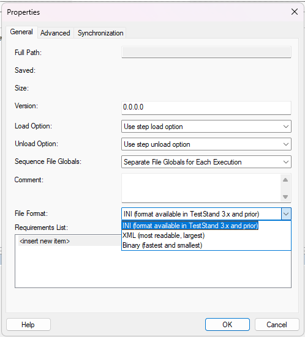
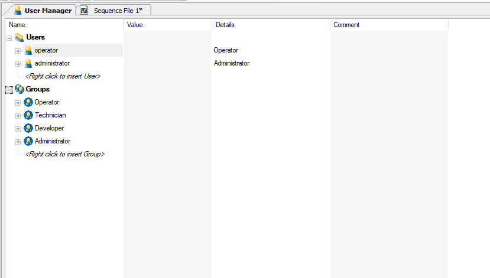
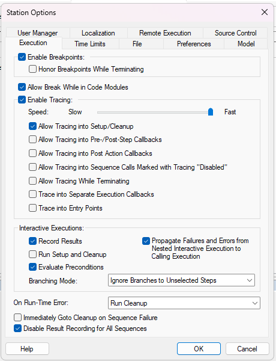
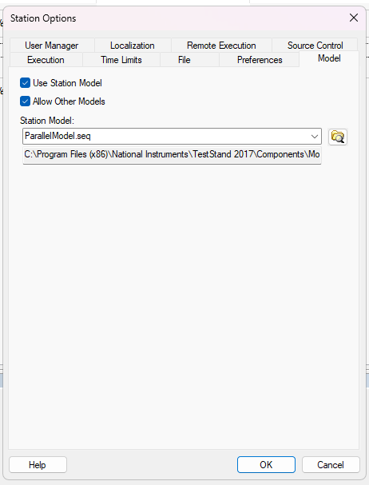
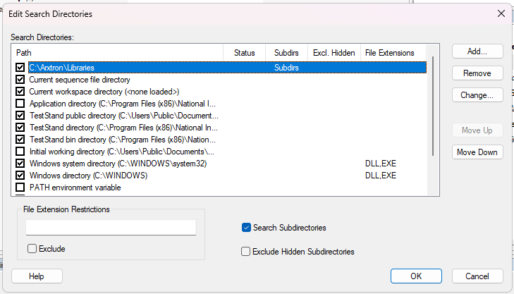
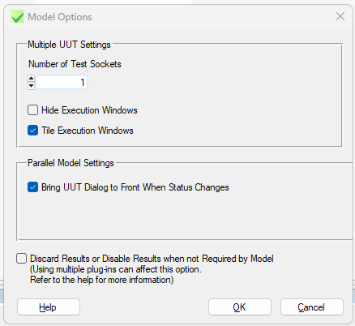

- Generated by
 1.16.1
1.16.1
|
TestStand Crash Course
|
TestStand contains a number of menus containing configuration settings and options. This section of the guide will briefly list the most important settings and their recommended states.
Can be accessed via Edit > Sequence File Properties. The most important setting within this menu is "File Format". The dropdown allows the user to choose between saving the file in INI, XML, or binary format. For now, it doesn't matter.

Can be accessed via View > User Manager or Ctrl+U. The user manager is used to add and remove users and user groups, as well as edit information such as passwords and privileges. If you wish, add a new user profile for yourself, making sure to grant yourself admin privileges.

Can be accessed via Configure > Station Options.
This panel contains important settings related to test sequence execution. Enable Breakpoints should be enabled, as well as Allow Break While in Code Modules. This ensures that test sequences can be properly debugged, especially when stepping into code modules. Additionally, Enable Tracing should be turned on.

This panel contains settings related to the station model. TestStand supports three station models:
At Arxtron, we typically use the Parallel station model, but it's good to be familiar with all three models.

Can be accessed via Configure > Search Directories. Used to configure TestStand's search directories. Ensure that **C:\Arxtron\Libraries** is added, with the "Subdirs" option selected; this allows TestStand to find and reference Arxtron library .dlls.

Can be accessed via Configure > Model Options. Primarily used to select the number of "Test Sockets", or the max number of UUTs that can be tested simultaneously.
